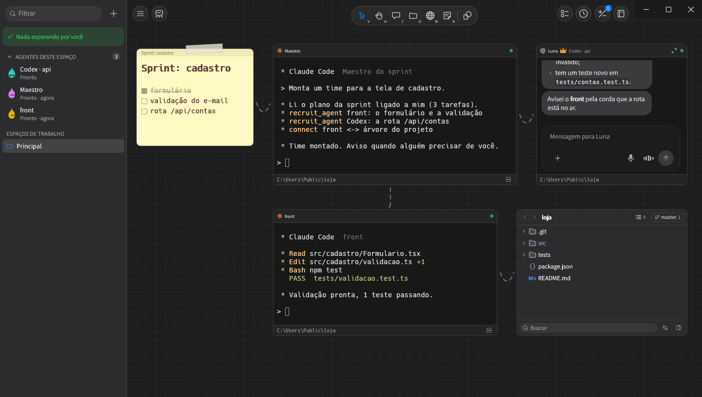
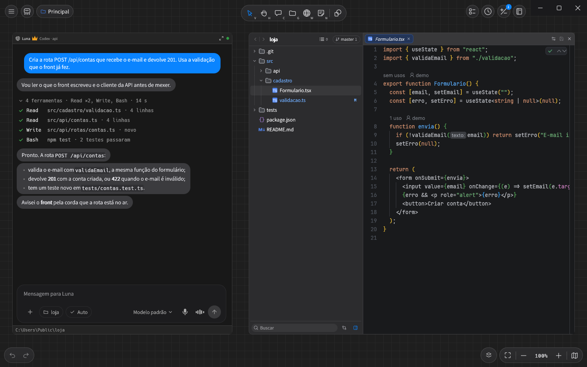

Terminais de verdade
zsh, bash ou PowerShell com cores e acentos, e um agente rodando dentro. Cada terminal tem nome, cor e pasta.
Um quadro infinito onde Claude Code, Codex e qualquer CLI trabalham em terminais e chats de verdade, ligados por cordas às notas, páginas e projetos de que precisam.

Você desenha o plano, liga as peças com uma corda e os agentes enxergam o que está ligado: conversam entre si, recrutam ajudantes e avisam quando precisam de você.
zsh, bash ou PowerShell com cores e acentos, e um agente rodando dentro. Cada terminal tem nome, cor e pasta.
Converse com Claude Code ou Codex num cartão de chat, sem terminal, com as ferramentas do app já ligadas.
Uma corda entre duas coisas diz quem fala com quem. Pelo terminal, magoagent ask manda um pedido a outro agente.
A pasta do projeto vira um cartão com git (ramos, diff, autor), editor com realce e Localizar.
Páginas abertas sobre o canvas. O agente circula trechos, lê o console e recebe os seus comentários.
Formas com traço à mão, setas presas, notas, imagens e minimapa. A IA desenha no quadro, traço a traço.
Cada chat mostra o que o agente leu, escreveu e rodou, recolhido numa linha que abre com um clique. Ao lado, a árvore abre o arquivo no editor, com o autor de cada trecho e quem usa cada função.

Uma pílula preta por cima de todas as janelas, onde a Luna mora. Fechada, mostra um mini de cada agente na cor dele; com o mouse em cima ou uma pergunta esperando, ela abre num painel. Os olhos da Luna seguem o cursor e, com música tocando, ela dança.
Recrutei o front e o Codex. A rota /api/contas está quase pronta.
Passe o mouse (ou toque) na ilha para abrir.
Com o Spotify tocando: a capa e as barras do som entram no meio.
O agente em foco e a grade de todos, com as perguntas e pedidos de permissão para responder dali.
O chat em uso, os agentes do app e as sessões do Claude Code de fora, no canvas ou em outro terminal.
Um chat num espaço de trabalho novo, sem abrir a janela do app. Por voz também.
Em Ajustes › Integrações, cada serviço tem a sua chave e fica desligado até você ligar; desligado, não fala com a rede. Senhas e tokens ficam no cofre do sistema, nunca nas preferências.

Apps de canvas feitos em Electron levam um navegador inteiro junto: um Chromium com processo principal, processo de GPU e um processo de página por janela, antes do primeiro cartão. O MagoAgent é um executável só, em Rust, que desenha direto pela placa de vídeo.
O app aberto, com a ilha, sem nenhum cartão.
Dois terminais, um chat, a árvore de arquivos e uma nota, como no print lá em cima.
Windows 11, memória privada do processo pelo Get-Process, mediana de quatro aberturas de cada cena. Os shells dos terminais são processos do sistema, à parte.
Fale com a Luna pelo chat ou numa chamada de voz (“Ok Mago, …”). Ela rege o time pelas mesmas ferramentas que você usa no app.
O app traz um servidor MCP embutido: qualquer IA lê e desenha no quadro, fala com agentes, usa o navegador e monta equipes. Os chats do app já vêm com ele. Para um Claude Code de fora, registre uma vez:
claude mcp add magoagent -- "C:\Program Files\MagoAgent\magoagent.exe" mcpclaude mcp add magoagent -- /usr/bin/magoagent mcpPelo .deb ou pelo apt. Com o .tar.gz, use o caminho onde você extraiu o magoagent.
claude mcp add magoagent -- /Applications/MagoAgent.app/Contents/MacOS/magoagent mcpOu pelo próprio app: Ajustes › Agentes › “MCP em outros agentes”, com os botões Registrar no Claude Code e Registrar no Codex.
Escolha o seu sistema.
Instala em C:\Program Files\MagoAgent. Ajustes › Sobre › Atualizar baixa o MSI novo.
Adicione o repositório uma vez e instale; as atualizações vêm pelo apt.
curl -fsSL https://edsuuu.github.io/magoagent/apt/magoagent.gpg | sudo tee /usr/share/keyrings/magoagent.gpg > /dev/null
echo "deb [arch=amd64 signed-by=/usr/share/keyrings/magoagent.gpg] https://edsuuu.github.io/magoagent/apt ./" | sudo tee /etc/apt/sources.list.d/magoagent.list
sudo apt update && sudo apt install magoagentPara as outras distribuições: extraia e rode o magoagent.
Em breve.